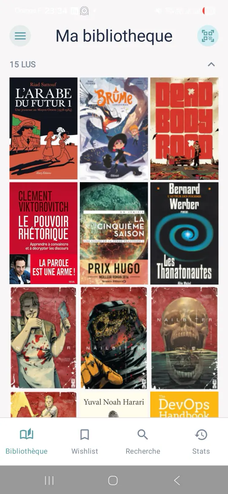
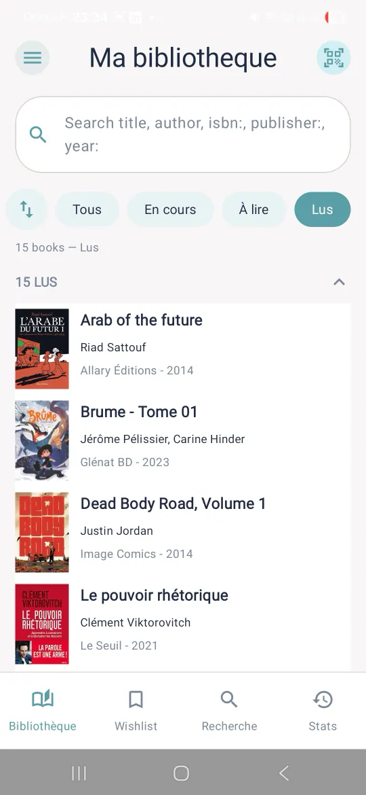
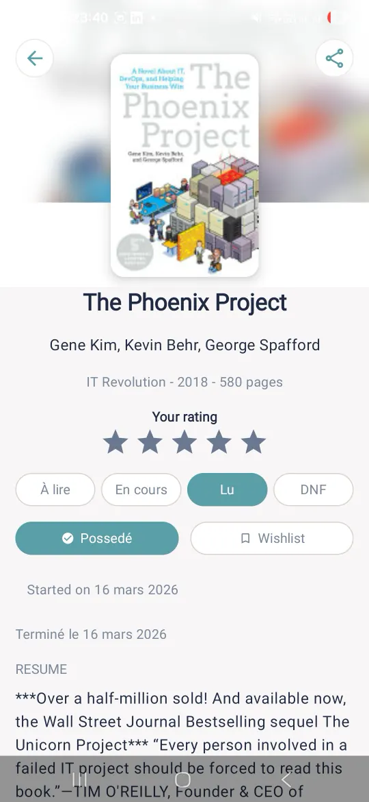
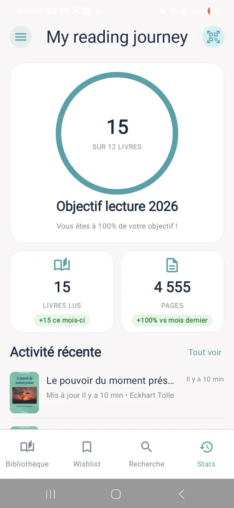

Bookfolio
Suivez vos lectures, gérez votre bibliothèque, synchronisez si vous voulez. Hors ligne d'abord.

Ce que ça change
-
Votre bibliothèque, sans compte
Elle fonctionne entièrement sur l'appareil. Aucun compte n'est nécessaire pour commencer.
-
Un livre ajouté en quelques secondes
Par titre, auteur, ISBN ou en scannant son code-barres. La fiche vient de Google Books, Open Library en repli.
-
Où vous en êtes, d'un coup d'œil
Quatre statuts : À lire, En cours, Lu, DNF. Les pages lues, et une section « En cours de lecture » pour reprendre.
-
Votre parcours de lecture
Un objectif annuel, les livres et les pages lus dans Stats, un journal de vos changements, une note sur cinq étoiles.
-
Sur vos autres appareils, si vous le voulez
La connexion Google est optionnelle : votre bibliothèque est sauvegardée dans un dossier privé de votre Google Drive, et vos statuts, notes et progression se retrouvent d'un appareil à l'autre.
Comment ça marche
Vous cherchez un livre par titre, auteur ou ISBN, ou vous scannez son code-barres.
Vous lui donnez un statut : À lire, En cours, Lu, DNF. Vous notez vos pages, votre note, vos notes.
Stats montre votre objectif de l'année et votre parcours. La synchronisation Google est là si vous en voulez.
Captures d'écran
Celles de la fiche Google Play. L'interface y mêle français et anglais.



Vos données
Votre bibliothèque est enregistrée localement en premier : elle fonctionne sans compte Google. Si vous activez la synchronisation, elle est copiée dans un dossier privé de votre propre Google Drive, et nulle part ailleurs. Il n'existe aucun serveur Bookfolio. Android en garde aussi une sauvegarde chiffrée, comme pour vos autres applications ; vous pouvez la couper.
Ce qui sort de l'appareil : les termes que vous saisissez pour chercher un livre, envoyés à Google Books (et à Open Library en repli), et le téléchargement des couvertures.
Les autorisations demandées
- Caméra : scanner un code-barres, rien d'autre. Demandée seulement quand vous ouvrez le scanner. Sans caméra, la saisie de l'ISBN trouve le même livre.
- Notifications : des rappels de lecture locaux, optionnels, à couper quand vous voulez.
- Internet et état du réseau : la recherche de livres, les couvertures, la synchronisation Google.
- Achats Google Play : les pourboires et le badge supporter, dans Réglages. Rien n'est obligatoire.
- Vibration : un retour au scan.
Télémétrie
Bookfolio embarque Firebase Analytics et Crashlytics, désactivés par défaut. Ils n'envoient rien tant que vous ne les activez pas, à l'onboarding ou dans Réglages, et vous pouvez les couper à tout moment. L'identifiant publicitaire est retiré de l'application. Pas de publicité.
Questions
Faut-il un compte Google ?
Non. Votre bibliothèque est enregistrée localement en premier et fonctionne sans compte Google. Si la synchronisation Drive est désactivée, vos données restent sur cet appareil.
Que synchronise la connexion Google ?
Une archive complète de votre bibliothèque et de vos réglages, plus, livre par livre, le statut, les dates, la progression, la note, les notes, la wishlist et la possession, fusionnés dans les deux sens entre vos appareils. Tout va dans le dossier privé de l'application dans votre Google Drive. L'autorisation demandée à Google se limite à ce dossier : ni votre nom, ni votre e-mail, ni le reste de votre Drive.
Et sans caméra ?
Le scanner est un raccourci, jamais le seul chemin : la saisie de l'ISBN trouve le même livre. Une tablette ou un Chromebook sans caméra peut installer l'application.
Bookfolio suit-il mon usage ?
Seulement si vous l'activez. Firebase Analytics et Crashlytics sont désactivés par défaut ; les événements envoyés, si vous les activez, ne contiennent ni donnée personnelle ni contenu de vos livres.
Où est la wishlist ?
Elle est désactivée par défaut. Activez « Fonction Wishlist » dans Réglages : les livres que vous marquez y apparaissent, et un rappel wishlist optionnel existe.